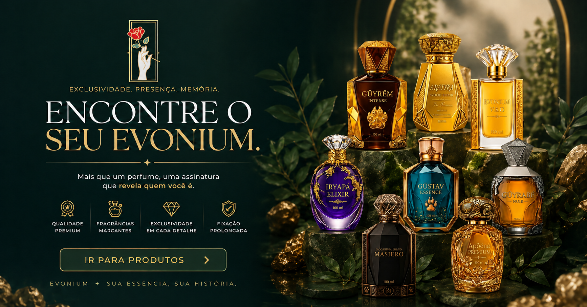

Perfumaria de nicho desde 2026
Fragrancias modernas, marcantes e feitas com personalidade.
A Evonium mistura elegância, sustentabilidade e um toque de glamour em essências.
Ver perfumesEvonium
Nascida em 2026, a Evonium redefine a perfumaria de nicho com fragrâncias ousadas, sofisticadas e memoráveis. Unindo técnicas artesanais à inovação contemporânea, criamos experiências olfativas únicas para quem valoriza exclusividade, elegância e personalidade em cada detalhe.
